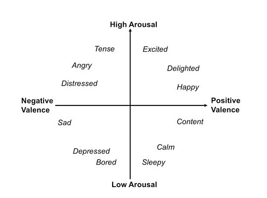
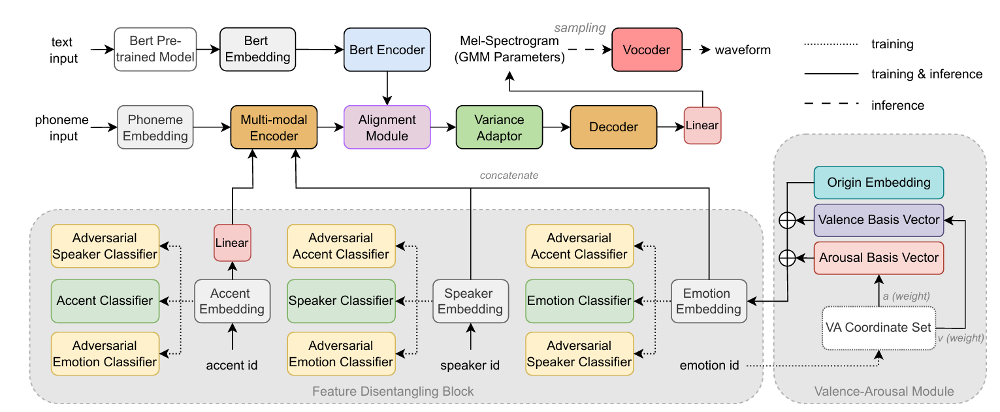
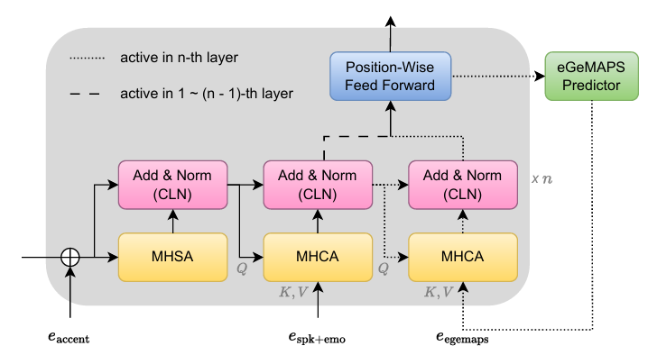
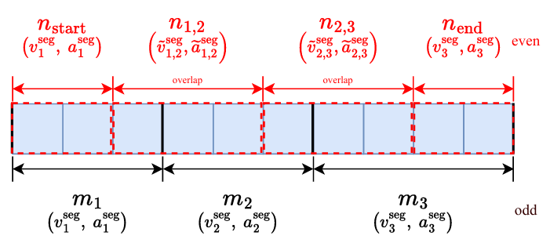
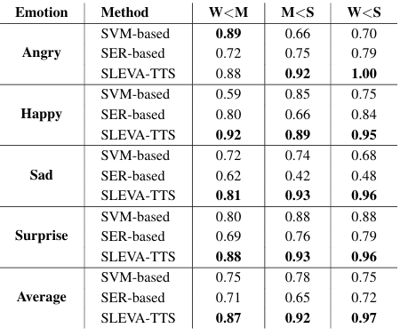
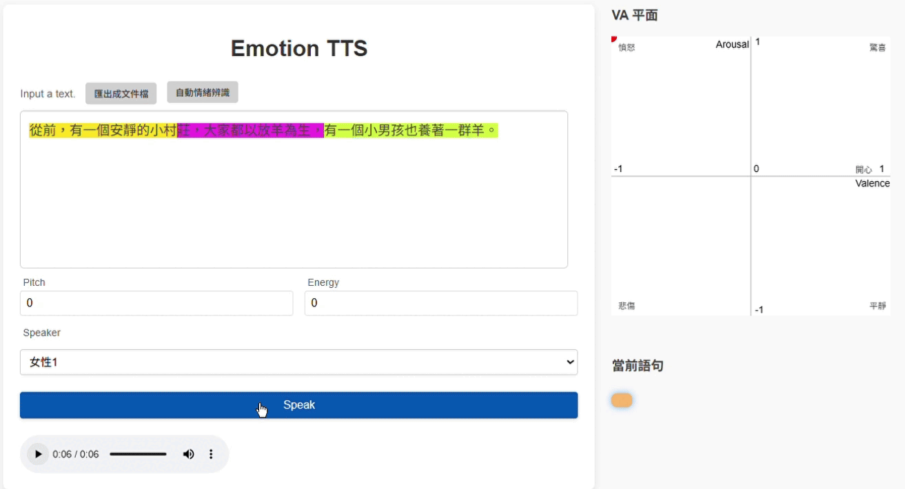
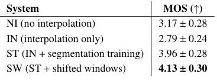

Self-Learned Emotional Valence-Arousal Space for Controllable TTS
Motivation: Existing emotional TTS relies on discrete labels or SER-based pipelines , which fail to capture fine-grained intensity or suffer from stability issues during multi-emotion transitions.
Goal: To build a controllable system that learns a continuous emotional VA space without explicit annotations, enabling smooth emotion transitions and fine-grained intensity control.

Valence-Arousal (VA) plane commonly used in psychology.
What is VA Space?

Figure 1: Overview Architecture of SLEVA-TTS.
Design Insight: Built on a non-autoregressive framework, the system integrates BERT-based semantic representations, adversarial feature disentanglement, and GMM-based acoustic modeling for expressive and stable speech synthesis.
The core contribution is the proposed self-learning VA module, which optimizes learnable emotion centers and shared latent embeddings to construct a continuous emotional space without explicit VA annotations.

Figure 2: Multi-modal Encoder featuring adversarial feature disentanglement.
Design Insight: The proposed multimodal encoder disentangles speaker, emotion, and accent embeddings in a unified framework. It further integrates eGeMAPS acoustic features through cross-attention to provide global prosodic guidance.

Figure 3: Multi-emotion transition via random segmentation and shifted-window mechanism.
Design & Motivation: When specifying multiple emotions within a single utterance, naively switching VA conditions at segment boundaries often introduces unnatural artifacts. To ensure stable and smooth transitions, we implemented two key strategies:
Motivation: To verify if the self-learned VA space provides precise intensity control across different affective states.
Each emotion category is sampled at three levels: 1/3 (Weak), 2/3 (Moderate), and 1.0 (Strong) of the converged VA vector to boundary.
| Emotion | Weak (1/3) | Moderate (2/3) | Strong (1.0) |
|---|---|---|---|
| Neutral | None | None | |
| Angry | |||
| Happy | |||
| Surprise | |||
| Sad |

Differentiation Accuracy Table
Experimental Results: By sampling coordinates along the converged VA directions, SLEVA-TTS achieves over 87% ~ 97% differentiation accuracy in emotion intensity, significantly outperforming traditional SVM-based and SER-based baselines (65% ~ 78%).
Motivation: To evaluate whether the proposed transition mechanism can generate smooth and natural emotional changes across multiple emotion segments while maintaining high speech quality and minimizing boundary artifacts.

Emotion trajectory visualization from speech, showing temporal interpolation across audio segments.

Differentiation Accuracy Table
Experimental Results:
We compare four transition strategies for multi-emotion speech synthesis.
IN (Interpolation Only) automatically interpolates emotions
between adjacent segments to reduce abrupt emotional jumps. However, excessive
transition boundaries often introduce unnatural artifacts and abnormal sounds.
In contrast, the proposed SW method, combining segmentation
training and shifted-window interaction, achieves the best perceptual quality
with a MOS score of 4.13 ± 0.30.